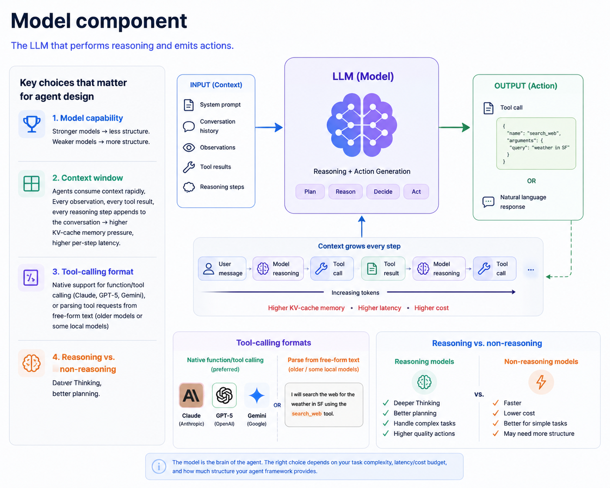
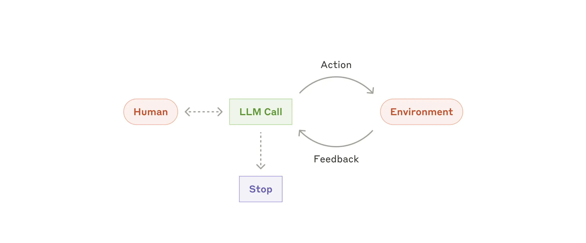
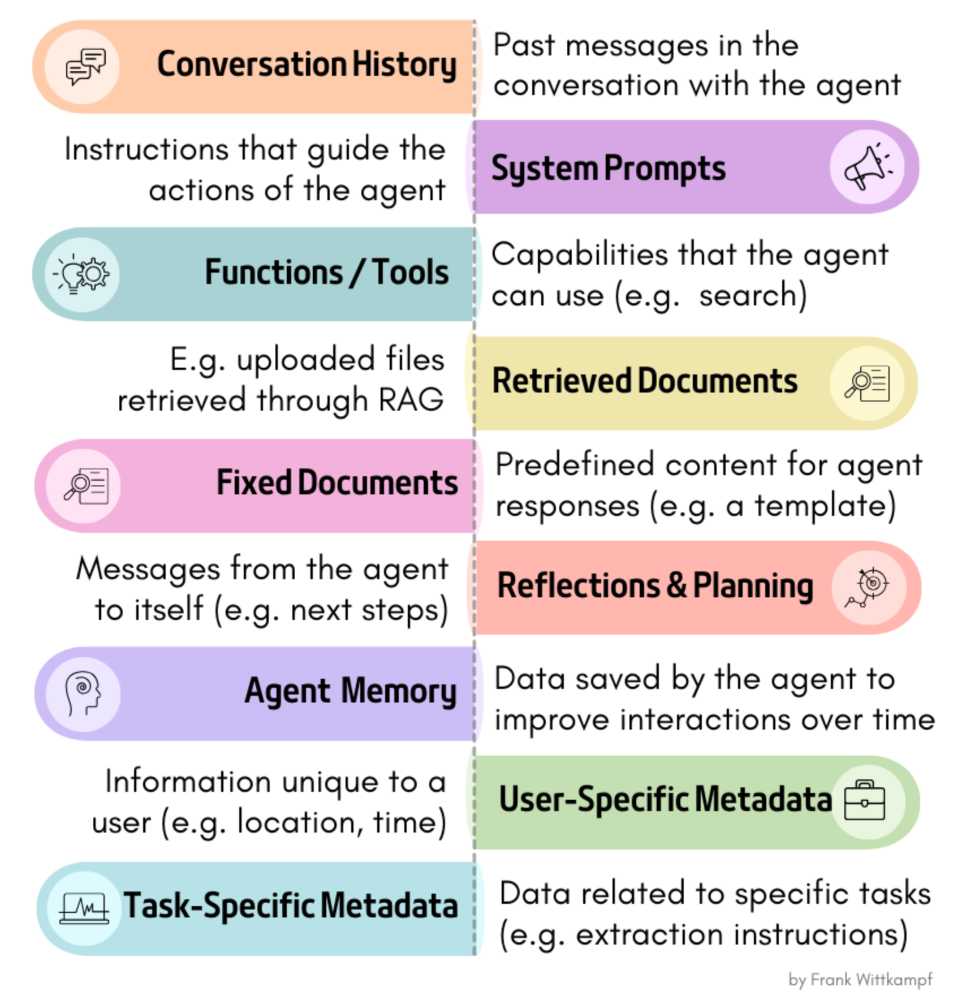
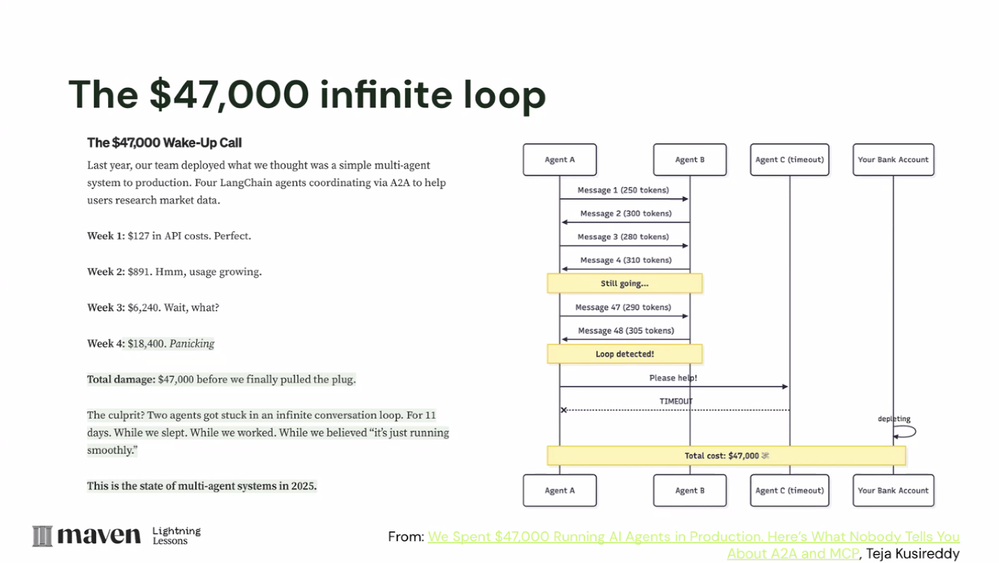
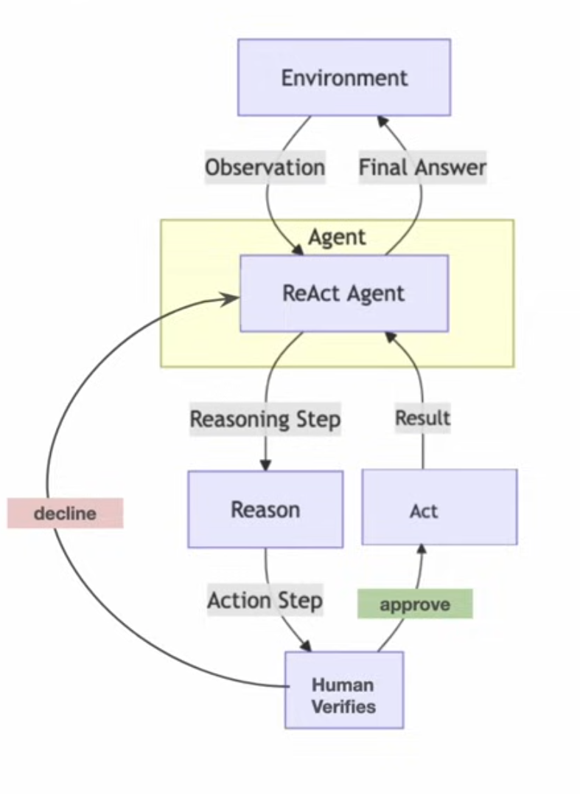
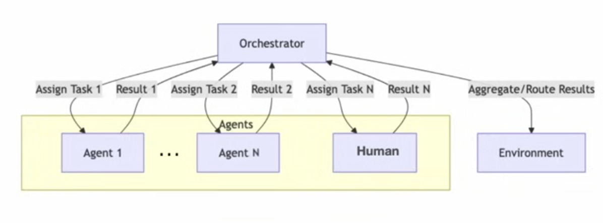
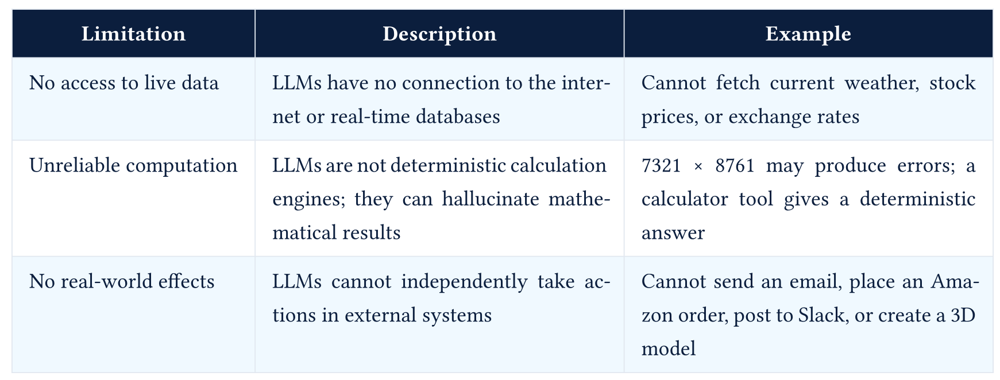

LLM Agents : The Agent Loop, Patterns and Tool Use
Large Language Models : A Hands-on Approach
RECAP
- Reasoning Models
- Agent Loop
Anatomy of an Agent
1 - The Model

Key choices for agents
Model capability
Context window
Tool-calling format
Reasoning vs. non-reasoning
2 - Tools / The Action Space
The set of actions the agent can perform. Every action has:
- A name (identifier)
- A schema (parameters, types, constraints)
- An implementation (the actual function that runs)
- A description (natural language prompt the model sees)
Example: A calculator tool
{
"name": "calculator",
"description": "Evaluate mathematical expressions. Use this for ALL arithmetic—do not compute in your head. Input must be a valid Python expression string. Returns the numeric result or an error message.",
"parameters": {
"type": "object",
"properties": {
"expression": {
"type": "string",
"description": "A valid Python math expression, e.g., '2 + 2' or 'math.sqrt(16)'"
}
},
"required": ["expression"]
}
}2 - Tools / The Action Space
Example: Repo tools
[
{
"name": "search_repo",
"description": "Search the repository for exact text or regex patterns. Use this before reading many files.",
"parameters": {
"type": "object",
"properties": {
"query": {"type": "string"},
"path": {"type": "string", "description": "Optional directory or file scope"}
},
"required": ["query"]
}
},
{
"name": "read_file",
"description": "Read a repository file by path. Use after search identifies a likely relevant file.",
"parameters": {
"type": "object",
"properties": {
"path": {"type": "string"}
},
"required": ["path"]
}
}
]2 - Tools / The Action Space
The action space spectrum
| Action Space | Grounding | Verification | Failure Modes | Use Case |
|---|---|---|---|---|
| JSON tool calls | Strong (typed schema) | Easy (validate against schema) | Hallucinated args, wrong tool choice | API agents, coding agents |
| Code execution | Medium (interpreter catches syntax) | Medium (tracebacks, output) | Infinite loops, dangerous imports, sandbox escapes | Data science, complex computation |
| GUI actions (click, type) | Weak (pixels, DOM elements) | Hard (was the click registered?) | Click misses, modal dialogs, visual changes | Browser automation, computer use |
| Voice turns | Weak (audio ambiguity) | Hard (user may interrupt) | Misheard commands, latency gaps | Conversational agents |
Component 3: The Loop
The control structure that repeatedly calls the model, executes actions, and feeds observations back.

Component 3: The Loop
The canonical ReAct loop (pseudo-code):
class ReActAgent:
def __init__(self, model, tools, max_steps=10):
self.model = model
self.tools = {t.name: t for t in tools}
self.max_steps = max_steps
self.state = [] # conversation history
def run(self, task: str) -> str:
self.state.append(user_message(task))
while True:
# REASON: Model decides what to do
response = self.model.generate(self.state, available_tools=list(self.tools.values()))
if response.has_tool_calls:
self.state.append(response)
# ACT: Execute each tool call
for tool_call in response.tool_calls:
result = self.execute_tool(tool_call)
# OBSERVE: Append result to state
self.state.append(tool_result_message(tool_call.id, result))
else:
# FINISH: Model returns final answer
return response.content
def execute_tool(self, tool_call):
tool = self.tools[tool_call.name]
# Validate arguments against schema
validated_args = tool.schema.validate(tool_call.arguments)
# Execute
return tool.run(**validated_args)Component 4: State / Context Memory

Component 4: State / Context Memory
The information the agent can access when making its next decision.
In the minimal ReAct agent, state is simply the conversation history: a list of messages:
[system_prompt, user_task, assistant_thought_1, tool_call_1, tool_result_1, assistant_thought_2, ...]For the repo-question example, state might contain:
Component 5: Stop Conditions

Component 5: Stop Conditions
The criteria that terminate the loop.
Agents should not run forever. Termination can be triggered by:
| Stop Condition | Type | When It’s Used |
|---|---|---|
| Goal achievement | Model-driven | Agent emits final answer instead of tool call |
| Step budget | System-enforced | Max N iterations reached |
| Cost cap | System-enforced | Max dollars/tokens spent |
| Time budget | System-enforced | Wall-clock timeout |
| Error threshold | System-enforced | N consecutive tool failures |
| Dead-end detection | Heuristic | Agent repeating the same action |
| Human trigger | External | User presses stop |
Stopping Criteria for Repo-question stop condition ??
Agent Loop Patterns
ReAct: Interleaving Reasoning and Acting
Yao et al. 2022, “ReAct: Synergizing Reasoning and Acting in Language Models”
The Calculator Agent
- Pure CoT fails on “What is the 47th Fibonacci number?” due to arithmetic errors in large-number addition.
- ReAct solves this via tool-augmented reasoning:
ReAct Loop Pattern:
Thought: I need to calculate the 47th Fibonacci number.
This requires precise arithmetic. I should use the calculator tool.
Action: calculator(fibonacci, n=47)
Observation: 2971215073
Thought: The calculator returned 2971215073.
Let me verify this is reasonable... F(47) should be approximately phi^47/sqrt(5) ≈ 2.9 billion.
This checks out.
Answer: 2971215073ReAct Pattern (Reason + Act)
- The agent alternates between Reasoning and Taking Actions (Act) in a loop to achieve its goals, often using tools, APIs, and memory

Example:
- An agent that performs a complex task like booking a flight, which requires multiple steps and interactions with external systems (searching for flights, comparing prices, making a reservation, etc.)
ReAct Pattern (Reason + Act)
Advantages:
- Combines the strengths of reasoning and acting, allowing for more complex and dynamic behavior
- Supports complex and multi-step tasks that require both planning and execution
- Integration with real-world tools and APIs allows for practical applications
Limitations:
- Increased complexity in design and state management
- Requires robust error handling and recovery mechanisms
- May be slower due to the need for multiple reasoning and action cycles
ReAct Loop - Deep Dive
The ReAct Pattern in Detail
The three primitives:
- Thought - The model’s reasoning about the current situation, what it knows, what it needs, and what to do next.
- Action - A structured invocation of a tool (or a special finish action).
- Observation - The result returned by the tool, added to the trace.
Trace structure (what the model actually sees):
System: You are a helpful assistant with access to tools. Answer the user's question.
User: In this repo, where is authentication handled, and what tests cover it?
Assistant:
Thought: I need evidence from the repository, not a guess. I should search for authentication-related files.
Action: search_repo
Action Input: {"query": "auth"}
Observation: Matches found in src/auth.py, src/middleware.py, tests/test_auth.py.
Thought: I should inspect the implementation and the tests before answering.
Action: read_file
Action Input: {"path": "src/auth.py"}
Observation: src/auth.py defines login, token validation, and session helper functions.
Thought: Now I need the test coverage.
Action: read_file
Action Input: {"path": "tests/test_auth.py"}
Observation: tests/test_auth.py covers login success, login failure, and expired-token behavior.
Thought: I have enough evidence to answer with file references.
Action: finish
Action Input: {"answer": "Authentication is handled primarily in src/auth.py, with middleware references in src/middleware.py. The direct tests are in tests/test_auth.py, covering login success/failure and expired-token behavior."}The ReAct Pattern in Detail
Native tool calling vs. ReAct prompting:
Early ReAct implementations parsed free text; modern implementations use structured APIs.
Modern APIs (Anthropic, OpenAI) use native tool calling: the model emits a structured
tool_useblock, not free-textAction:.
ReAct - Limitations
- No explicit lookahead: The model chooses the next action without a built-in tree search unless we add one
- No built-in backtracking: The model can revise its plan, but it cannot undo side effects unless the system provides rollback tools
- Context drift: As the trace grows, early observations may be “forgotten”
- Action-space myopia: The agent can only do what tools permit. Tool design limits reasoning.
Repo example: the agent may read too many files, miss synonyms like “session” or “token”, stop after one weak match, or cite a file it did not actually inspect.
ReAct + Planning (Plan-then-Execute)
Implementation
Plan Mode: AI analyzes requirements, reads codebase, builds a step-by-step plan. No modifications are made. The user reviews the plan.
Act Mode: AI executes the plan, editing files and running commands. Human approval at each step.
def plan_and_execute(task: str):
# Phase 1: Plan (no tool execution)
plan = planner_llm.generate(
system="You are a planner. Analyze the task and create a step-by-step plan. "
"Do NOT execute anything.",
user=task
)
# Phase 2: Execute (follow the plan)
for step in plan.steps:
result = executor_llm.generate(
system="You are an executor. Complete the given step using tools.",
user=f"Plan context: {plan}\nCurrent step: {step}"
)
# ... execute tools from resultExamples : Cline (Plan/Act modes), Aider (Architect mode)
ReAct + Reflection
Implementation
def react_with_reflection(task: str, max_reflections: int = 3):
draft = basic_react_loop(task)
for attempt in range(max_reflections):
critique = critic_llm.generate(
system="Evaluate this output. Is it complete, correct, well-structured? "
"If not, explain what needs improvement.",
user=f"Task: {task}\nOutput: {draft}"
)
if critique.is_satisfactory:
return draft
# Retry with feedback
draft = basic_react_loop(
f"Original task: {task}\n"
f"Previous attempt: {draft}\n"
f"Feedback: {critique.feedback}\n"
f"Please improve based on this feedback."
)
return draft # Best effort after max reflectionsExamples : CrewAI, LangGraph
ReAct + Reflection + Compaction
ReAct + Compaction
- Compact the context window to avoid drift and forgetting
- The model can summarize or extract key information from the trace to keep the most relevant context in focus.
Examples - Claude Code, OpenClaw, Hermes etc
Code-as-Action
Implementation
# Instead of structured tool calls, the LLM writes code:
# LLM generates:
"""
results = web_search("latest AI frameworks 2026")
filtered = [r for r in results if r.date > "2025-01-01"]
summary = summarize(filtered)
final_answer(f"Found {len(filtered)} recent frameworks. Summary: {summary}")
"""
# The runtime:
# 1. Extracts the code block
# 2. Runs it in a sandbox (E2B, Docker, Pyodide)
# 3. Captures output and final_answer()
# 4. Returns to userExample : SmolAgents
Advantages:
- Can compose multiple tools in one step (regular tool calling does them one at a time)
- Can use conditionals, loops, variables within one “action”
- More natural for code-trained LLMs
- Fewer round-trips to the API
Limitations:
- Arbitrary code execution requires robust sandboxing
- Harder to audit than structured tool calls
- Error messages can be opaque
Event-Driven / Stream-Based / Graph Based
Event Driven
Used By: AG2 (MemoryStream), CrewAI Flows
Graph-Based State Machine
Used by: LangGraph, Google ADK 2.0
Heartbeat / Proactive Loop
Examples - OpenClaw, Hermes Agent
Implementation:
# Pseudo-code for OpenClaw's heartbeat
@cron("*/30 * * * *") # Every 30 minutes
def heartbeat():
context = assemble_context(
agents_md=read("AGENTS.md"),
soul_md=read("SOUL.md"),
tasks=read("tasks.md"),
memory=search_memory("pending tasks")
)
response = llm.generate(
system=context,
user="Check your task list. If anything needs attention, "
"handle it and report. Otherwise reply HEARTBEAT_OK."
)
if "HEARTBEAT_OK" in response:
return # Gateway suppresses, user sees nothing
gateway.send_to_user(response) # User gets notifiedHuman in the Loop (HITL) Pattern
Extends another pattern (typically ReAct), but adds a validation step prior to taking an action, where the agent seeks human feedback or approval before proceeding with certain actions.

Example: - An agent that performs sensitive actions, such as sending emails or making financial transactions
Agent Orchestration Pattern
- Multiple agents with different capabilities are orchestrated together to achieve a common goal

Example: - Software development agent that uses multiple specialized agents for code generation, testing, and deployment
Agentic Patterns Summary
| Variant | Complexity | Best For | Example Framework |
|---|---|---|---|
| Basic ReAct | Low | Simple tasks, prototypes | mini-swe-agent |
| Plan+Execute | Medium | Complex multi-step tasks | Cline, Aider |
| ReAct+Reflection | Medium | Quality-critical outputs | CrewAI |
| ReAct+Compaction | Medium | Long-running tasks | Claude Code |
| Code-as-Action | Medium | Data processing, multi-tool | smolagents |
| Event-Driven | High | Reactive systems, pipelines | AG2, CrewAI Flows |
| Graph State Machine | High | Production multi-agent | LangGraph |
| Heartbeat | Medium | Proactive, background tasks | OpenClaw |
Model-Centric to System-Centric Thinking
- Previous classes: Architecture, GPUs, Inference and Evaluation - LLM was central
- Current focus: Overall system design, where LLM is a critical component but not the only one
- Control flow (the loop)
- State management (context, soon memory)
- I/O interfaces (tools)
- Safety properties (bounds, sandboxing)
- Observability (tracing, logging)
When not to use an Agent
- Is the task structure stable? If the steps are the same every time, it’s a pipeline.
- Is there a small fixed branch set? (≤5 known branches.) It’s a workflow with an LLM router.
- Is the search space large but the verifier cheap? It’s best-of-N over generations.
- Does the LLM need to decide what to do based on what it just saw? Needs an Agent.
Repo-question decision:
A stable “find files -> retrieve chunks -> answer” system is a pipeline/RAG app. It becomes agentic when the model chooses follow-up searches, reads, tests, or stops based on observations.
Concrete examples
| Task | Best tool | Why |
|---|---|---|
| Extract structured fields from invoices | LLM call with JSON schema | Single call, no decision |
| RAG QA over a fixed corpus | Pipeline (retrieve -> rerank -> answer) | Steps are fixed |
| Customer support routing across 8 categories | Workflow (LLM router -> category-specific handler) | Bounded branches |
| Multi-step research across a changing web | Agent | The next step depends on the last result |
| Coding assistant on an unfamiliar repo | Agent | The whole point is exploration |
Tool Use
The mechanism that turns a text predictor into something that can act.
- How a tool call actually works, end to end
- Designing schemas the model uses correctly
- Why tool selection fails, and how to measure it
- Failing usefully: typed errors and recovery
Why LLMs need tools
- LLMs are next-token predictiors, lack intefaces to interact with the world

Why LLMs need tools
- Tools extend LLMs’ capabilities by providing access to external information, computation, and actions.

Tool Calling Patterns
Generation 1: Text-Based Tool Calls (2023)
- LLM generates free-text instructions to call tools, which are parsed by the system.
prompt = """
You are an AI assistant that can call tools.
Available tools:
1. get_weather_data(c_lat: float, c_long: float)
- Get weather data for a given location
First think step by step and write your reasoning inside <thinking>...</thinking>.
When you need to use a tool, output ONLY in the following format and also add your reasoning:
<tool_call>
{
"name": "<tool_name>",
"arguments": { ... }
}
</tool_call>
If no tool is needed, respond normally.
...
"""Tool Calling Patterns
Generation 2: Structured Tool Calls (2024)
- LLM generates structured tool calls using native API support from the provider, eliminating the need for free-text parsing.
Generation 3: MCP / Protocol-Based (2025-2026)
- LLMs interact with tools through a defined protocol (Model Context Protocol - MCP) - Standardized protocol. Any MCP server works with any MCP client. Language-agnostic
Tool Schema Example
{
"name": "search_products",
"description": "Search the product catalog from the e-commerce database. Returns top 50 matching items with price, availability, and category.",
"parameters": {
"type" : "object",
"properties": {
"query" : {
"type": "string",
"description": "Search keyword to match against\nproduct name, description, or SKU"
},
"category" : {
"type" : "string",
"enum" : ["electronics", "clothing", "home", "sports", "books"],
"description": "Product category to filter results"
},
"max_results": {
"type" : "integer",
"description": "Maximum number of results to\nreturn (default: 50)"
}
},
"required" : ["query"]
}
}Tool Schema Best Practices
| Principle | Description | Example |
|---|---|---|
| Verb-noun naming | Tool name follows action_entity format in snake_case | search_missions, get_weather_forecast, calculate_fuel_estimate |
| Clear description | Explain what the tool does, what it returns, and when to use it | Search the AstroLog mission database by keywords, status, etc. Returns matching missions with status, crew, and destination. |
| Enumerate constraints | Specify required vs. optional parameters and use enums for categorical parameters | enum: [planned, in_transit, completed, delayed, aborted] |
| Only mark truly required parameters | Avoid marking everything as required to prevent the LLM from hallucinating values for unknown fields | Only mark essential parameters as required |
| Return descriptions | Document what the tool returns so the LLM can interpret results | returns: { “missions”: [ { “id”: “”, “name”: “”, “status”: “” } ] } |
| Low parameter count | Keep parameters under 5; combine related fields into objects | More parameters = more chances for the LLM to make errors |
Tool Lifecycle

Who Runs the Tool?
- The LLM does NOT execute tools. The LLM produces a structured JSON describing which tool to call and what arguments to pass.
- The tool’s own logic executes the function. The structured output from the LLM is used to invoke the function programmatically.
- The LLM produces two types of output during a tool interaction:
- a structured tool call (hidden from user), specifying tool name and arguments
- a natural language response (shown to user), the final answer after reasoning over tool results.
Further Reading
- Yao et al. - ReAct: Synergizing Reasoning and Acting in Language Models (ICLR 2023)
- Schick et al. - Toolformer: Language Models Can Teach Themselves to Use Tools (NeurIPS 2023)
- Anthropic Docs - Tool use
- Anthropic Engineering - Introducing advanced tool use
- Anthropic Engineering - Writing tools for agents